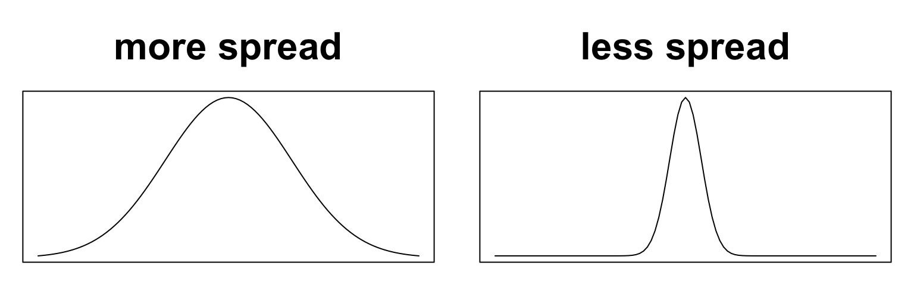
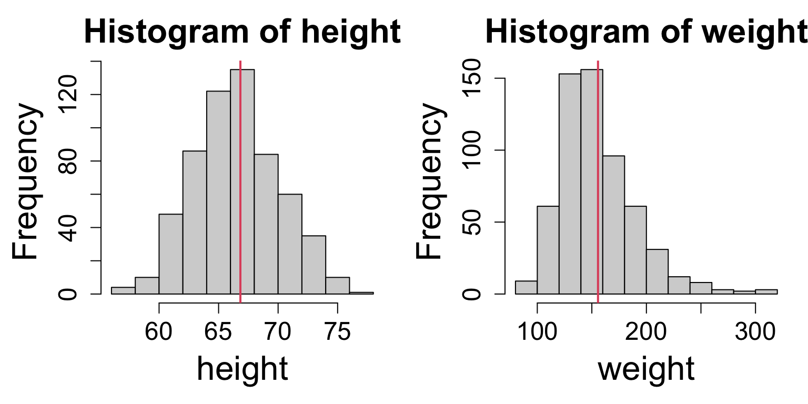
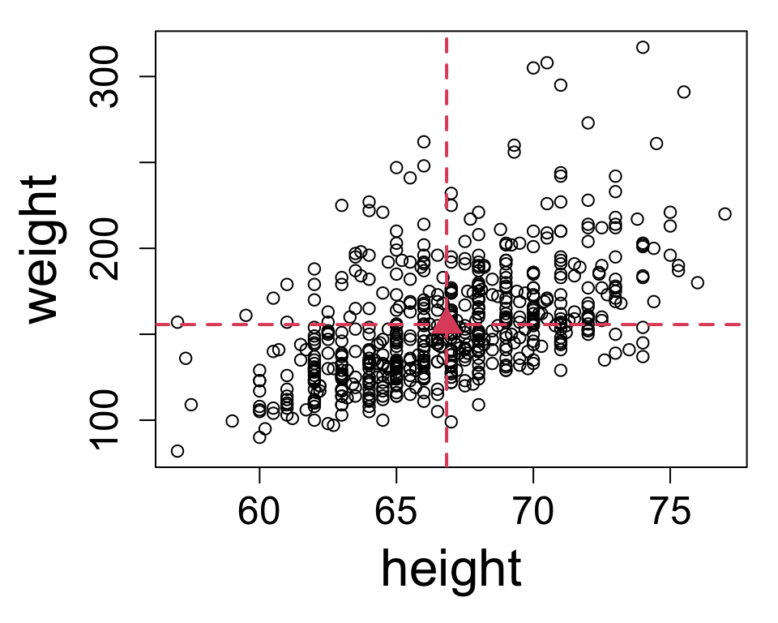
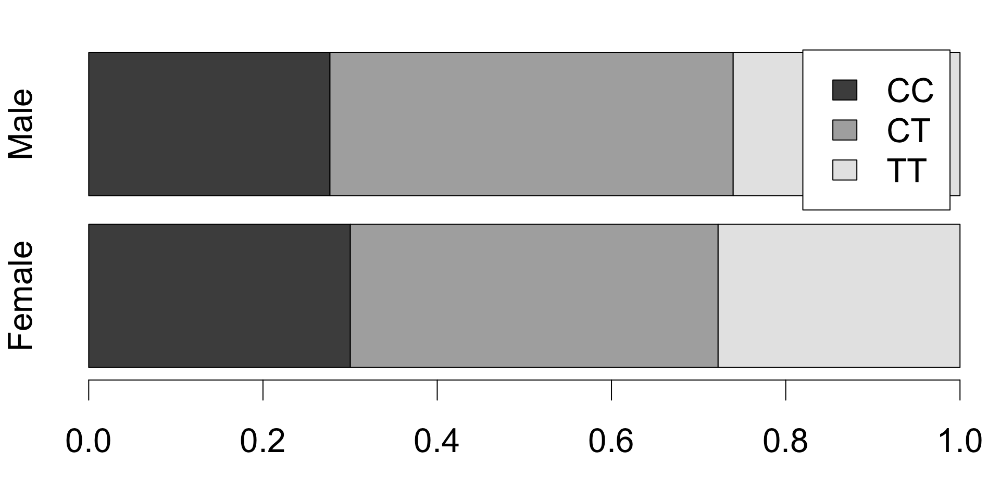
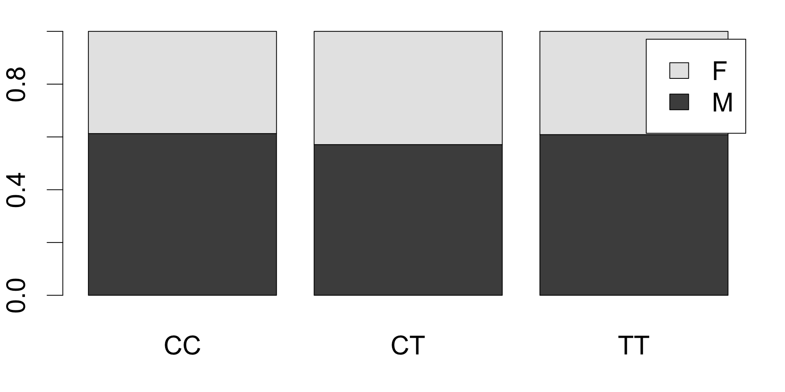
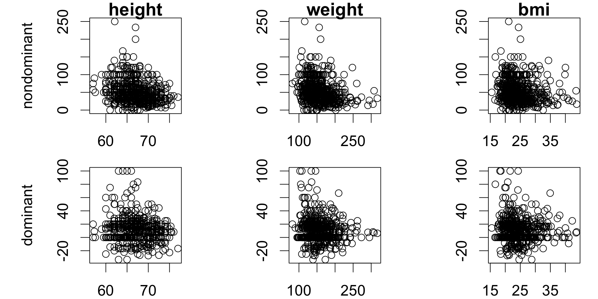
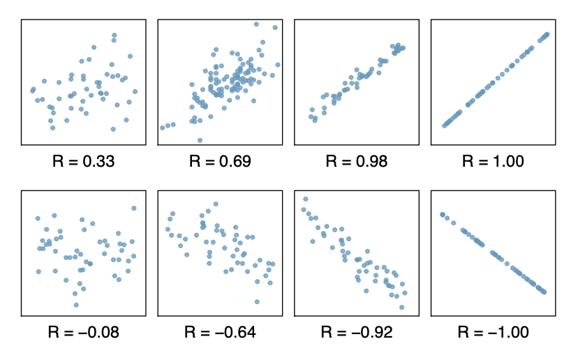
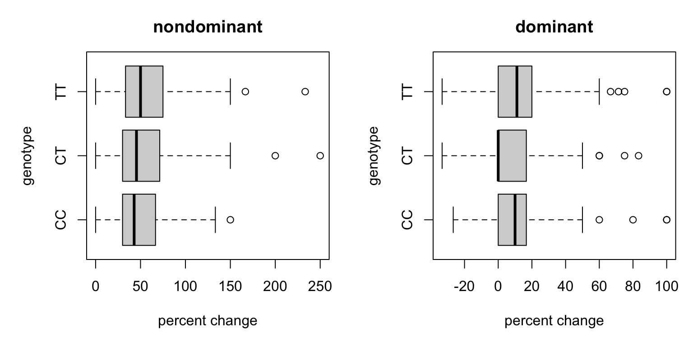

Bivariate summaries
Quantitative and graphical techniques for summarizing two variables
Today’s agenda
HW discussion
Reading quiz [2pm section] [4pm section]
(Univariate) Measures of spread
Graphical summmaries for two variables
- numeric/numeric
- numeric/categorical
- categorial/categorical
Lab: bivariate graphics in R
Measures of spread
The spread of observations refers to how concentrated or diffuse the values are.
Two ways to understand and measure spread:
- ranges of values capturing much of the distribution
- deviations of values from a central value
Range-based measures
A simple way to understand and measure spread is based on ranges. Consider more ages, sorted and ranked:
| age | 16 | 18 | 19 | 20 | 21 | 22 | 25 | 26 | 28 | 29 | 30 | 34 |
| rank | 1 | 2 | 3 | 4 | 5 | 6 | 7 | 8 | 9 | 10 | 11 | 12 |
The range is the difference [maximum value] - [minimum value] \[\text{range} = 34 - 16 = 18\]
The interquartile range (IQR) is the difference [75th percentile] - [25th percentile] \[\text{IQR} = 29 - 19 = 10\] When might you prefer IQR to range? Can you think of an example?
Deviation-based measures
Another way is based on deviations from a central value. Continuing the example, the mean age is is 24. The deviations of each observation from the mean are:
| age | 16 | 18 | 19 | 20 | 21 | 22 | 25 | 26 | 28 | 29 | 30 | 34 |
| deviation | -8 | -6 | -5 | -4 | -3 | -2 | 1 | 2 | 4 | 5 | 6 | 10 |
The average deviation is defined as the average of the absolute values of the deviations from the mean: \[\frac{8 + 6 + 5 + 4 + 3 + 2 + 1 + 2 + 4 + 5 + 6}{12}\]
The standard deviation is defined in terms of the squared deviations from the mean: \[\sqrt{\frac{(-8)^2 + (-6)^2 + (-5)^2 + (-4)^2 + (-3)^2 + (-2)^2 + (1)^2 + (2)^2 + (4)^2 + (5)^2 + (6)^2}{12 - 1}}\]
Mathematical notations
Denote \(n\) observations of a variable \(x\) by \(x_1, \dots, x_n\), so that \(x_i\) indicates the value of the \(i\)th observation. Our ages:
16, 18, 19, 20, 21, 22, 25, 26, 28, 29, 30 and 34
Applying the notation at right:
| \(i\) | 1 | 2 | 3 | 4 | 5 | 6 | 7 | 8 | 9 | 10 | 11 | 12 |
|---|---|---|---|---|---|---|---|---|---|---|---|---|
| \(x_i\) | ||||||||||||
| \(x_i - \bar{x}\) | ||||||||||||
| \((x_i - \bar{x})^2\) |
The mean of the observations is written: \[\bar{x} = \frac{1}{n}\sum_i x_i\]
The standard deviation is: \[s_x = \sqrt{\frac{1}{n - 1}\sum_i (x_i - \bar{x})^2}\]
How would you write the formula for calculating average deviation using this notation?
Interpretations
Listed from largest to smallest, here are each of the measures of spread for the 12 ages:
| range | iqr | st.dev | avg.dev |
|---|---|---|---|
| 18 | 8.5 | 5.527 | 4.667 |
The interpretations differ between these statistics:
- [range] all of the data lies on an interval of 18 years
- [IQR] the middle half of the data lies on an interval of 8.5 years
- [average deviation] the average distance from the mean is 4.67 years
- [standard deviation] the average squared distance from the mean, rescaled to years, is 5.53 years
Robustness
The IQR is more robust than any of the other measures, because outliers only affect extreme percentiles.
Consider adding an observation of 94 to our 12 ages:
# initial range
range(ages)[1] 16 34# append an outlier
ages_add <- c(ages, 94)
# relative change in IQR
(IQR(ages_add) - IQR(ages))/IQR(ages)[1] 0.05882353# relative change in SD
(sd(ages_add) - sd(ages))/sd(ages)[1] 2.640935The effect of the outlier on each measure is captured by the ratio \(\frac{\text{measure with outlier}}{\text{measure without outlier}}\), which shows:
- the IQR increases by 5.88%
- the standard deviation increases by 264%
Limitations of univariate summaries
So far we have discussed univariate descriptive techniques — those that pertain to one variable at a time. Consider, for example, the height and weight of participants in the FAMuSS study:

- both unimodal, no obvious outliers
- heights symmetric
- weights right-skewed
- but these observations actually come in pairs
The summaries we know how to make don’t reflect how the variables might be related.
Bivariate summaries
Bivariate (and by extension multivariate) summaries are graphical or numerical descriptions that represent two (or more) variables jointly.
A simple example is a scatterplot:

Each point represents a pair of values \((h, w)\) for one study participant.
- Reveals a relationship: taller participants tend to be heavier
- But no longer shows individual distributions clearly
Notice, though, that the marginal means (dashed red lines) still capture the center well.
Summary types
Bivariate summary techniques differ depending on the data types of the variables being compared. Some examples the context of the FAMuSS study:
| Question | Comparison |
|---|---|
| Did genotype frequencies differ by race or sex among study participants? | categorical/categorical |
| Were differential changes in arm strength observed according to genotype? | numeric/categorical |
| Did change in arm strength appear related in any way to body size among study participants? | numeric/numeric |
| Did study participants experience similar or different changes in arm strength depending on arm dominance? | ?? |
Categorical/categorical
A contingency table is a bivariate tabular summary of two categorical variables; it shows the frequency of each pair of values. Usually the marginal totals are also shown.
| CC | CT | TT | total | |
|---|---|---|---|---|
| Female | 106 | 149 | 98 | 353 |
| Male | 67 | 112 | 63 | 242 |
| total | 173 | 261 | 161 | 595 |
There are multiple ways to convert to proportions by using different denominators:
- grand total
- row total
- column total
Each has a different interpretation and should be chosen according to the question of interest.
Categorical/categorical
Did genotype frequencies differ by sex among study participants?
For this question, the row totals should be used to see the genotype composition of each sex.
As a table:
| CC | CT | TT | |
|---|---|---|---|
| Female | 0.3003 | 0.4221 | 0.2776 |
| Male | 0.2769 | 0.4628 | 0.2603 |
As a graphic:

The proportions are quite close, suggesting minimal sex differences.
Categorical/categorical
Did sex frequencies differ by genotype among study participants?
For this question, the column totals should be used to see the sex composition of each genotype.
As a table:
| CC | CT | TT | |
|---|---|---|---|
| Female | 0.6127 | 0.5709 | 0.6087 |
| Male | 0.3873 | 0.4291 | 0.3913 |
As a graphic:

The proportions are close, suggesting minimal genotype differences.
Numeric/numeric
Did change in arm strength appear related in any way to body size among study participants?
Comparing numeric variables is easiest accomplished by scatterplots.

Correlation
In addition to graphical techniques, for numeric/numeric comparisons, there are also quantiative measures of relationship.

Correlation measures the strength of linear relationship, and is defined as: \[r_{xy} = \frac{1}{n - 1}\frac{\sum_i (x_i - \bar{x})(y_i - \bar{y})}{s_x s_y}\]
- \(r \rightarrow 1\): positive relationship
- \(r \rightarrow -1\): negative relationship
- \(r \rightarrow 0\): no relationship
Interpreting correlations
Did change in arm strength appear related in any way to body size among study participants?
Here are the correlations corresponding to the plots we checked earlier.
| height | weight | bmi | |
|---|---|---|---|
| drm.ch | -0.1104 | -0.1159 | -0.07267 |
| ndrm.ch | -0.265 | -0.2529 | -0.1436 |
So there aren’t any linear relationships here. A rule of thumb:
- \(|r| < 0.3\): no relationship
- \(0.3 \leq |r| < 0.6\): weak to moderate relationship
- \(0.6 \leq |r| < 1\): moderate to strong relationship
- \(|r| = 1\): either a mistake or not real data
Numeric/categorical
Side-by-side boxplots are usually a good option. Avoid stacked histograms.
Were differential changes in arm strength observed according to genotype?

Look for differences:
- location shift
- spread
- center
What do you think? Any notable relationships?